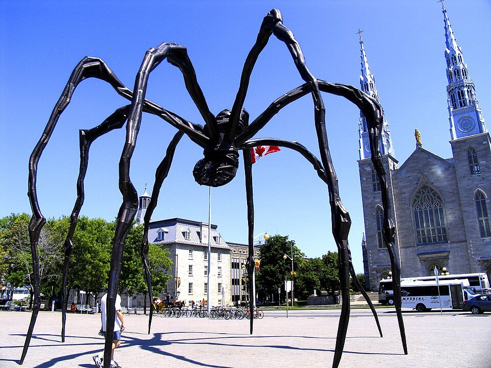

Maman
Louise Bourgeois · 1999 (this cast acquired 2004) · Stainless steel, bronze and marble · 9.3 × 8.9 × 10.2 m · National Gallery of Canada, Ottawa
In copyright. Look and learn: shown for study, not for download. · Photo: John Talbot, CC BY 2.0
Louise Bourgeois made Maman in 1999, at eighty-seven, for the first Unilever Series commission in the Turbine Hall at Tate Modern. The original is steel; six bronze casts followed, made at the Modern Art Foundry. The spider stands more than nine metres high and carries a sac of 32 marble eggs. Her mother ran the family's tapestry restoration workshop in Paris. The National Gallery of Canada in Ottawa, the cast shown here, paid $3.2 million for it in 2004, about a third of the gallery's annual budget.